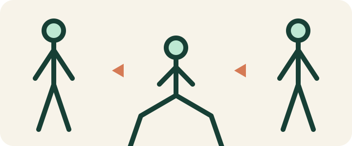
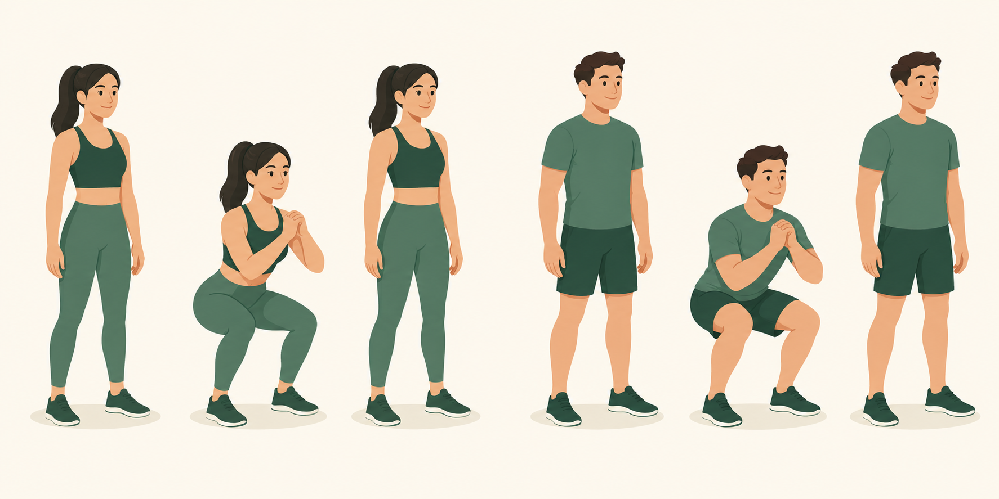
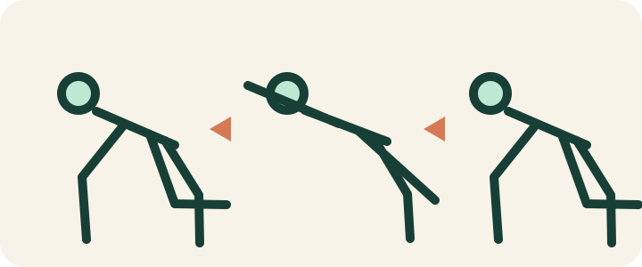
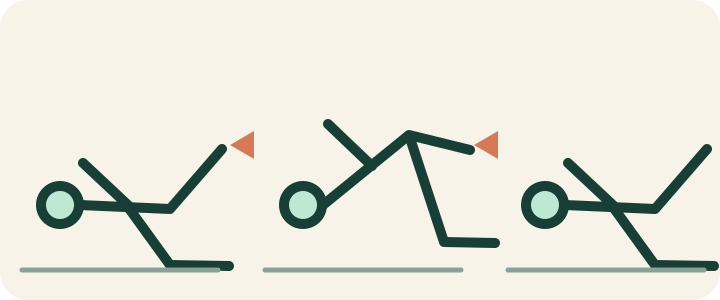
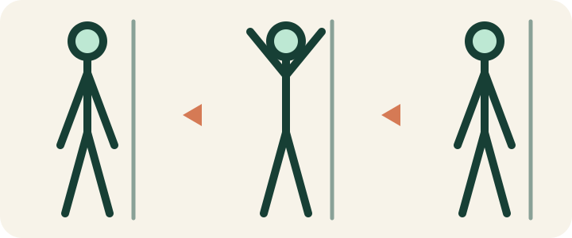
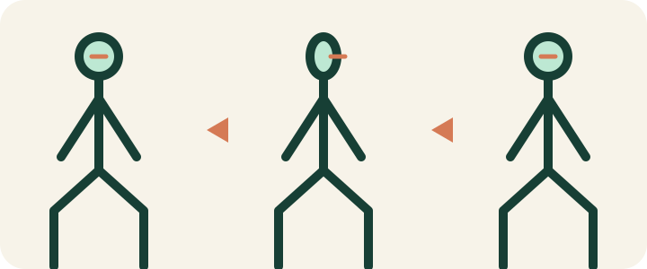
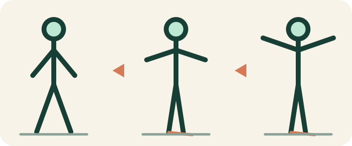

Knäböj · Squat
Stående rörelse med tydlig förändring i höft och knä.
913 byteFLEX · ILLUSTRATIONSPILOT
Detta är ett fristående prov och ingår ännu inte i appens övningsbibliotek. Samma linjebaserade SVG-system testas på olika kroppslägen och rörelsetyper.
Referensen nedan visar hur kvinnlig och manlig figur ska höra ihop visuellt. PNG-filen används bara för designbeslut; produktionsbilderna ska ritas som små SVG-filer.


Stående rörelse med tydlig förändring i höft och knä.
913 byte
Fyrfota position och diagonal arm- och benrörelse.
940 byte
Liggande position där golvlinjen hjälper orienteringen.
979 byte
Enkel omgivningsdetalj visar kontakten med väggen.
1 083 byte
Liten rörelse där accentlinjen visar blickriktningen.
1 112 byte
Balansövning där armarnas läge och fotlinjen förtydligar stegen.
1 127 byteFilerna visar hur långt en gemensam figur, två huvudfärger, en accentfärg och tre poser kan räcka. Nästa bedömning bör handla om rörelsernas begriplighet, behovet av pilar och leder samt om figuren behöver mer anatomisk detalj. Filstorleken är redan så liten att tydlighet kan prioriteras framför ytterligare komprimering.